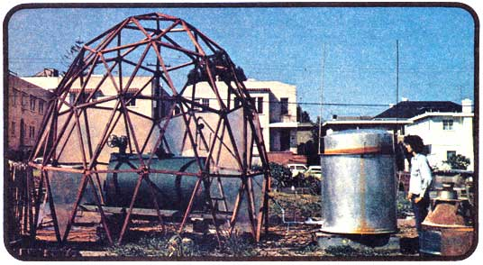
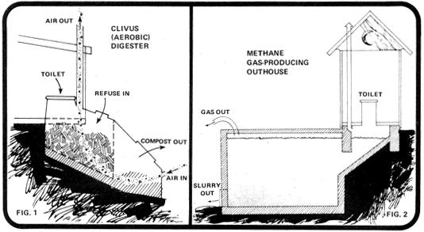
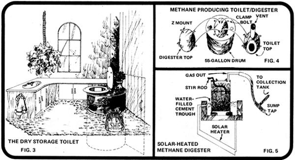

Under prevailing U.S. and Canadian sanitary codes, most recycling of human waste is unacceptable to local health authorities. Before you begin to fume at the "closed minds" of such officials, however, remember that sewage-borne disease was a real problem in rural areas until quite recently. Those "restrictive" laws, in other words, were made for good reason.
On the other hand, there's no question that this continent is long overdue for some breakthroughs in the field of safe, ecologically sound waste treatment. Especially if those breakthroughs will allow individuals, families, and small communities to quickly and inexpensively recycle their waste into usable fertilizer and/or fuel.
The success of your homestead or community may very well depend on your foresight in planning for the disposal of human wastes. This isn't a matter you can ignore or assign a low priority. Many a thriving commune has been closed down by the local health department because of inadequate sanitary facilities . . . and many others have been forced to install expensive waste processing systems at very short notice under threat of the same fate.
Some homesteaders, however, believe that the sanitary codes they're pressured to observe are not only costly but wasteful and harmful to the environment. The flush toilet, with its required 100to-1 dilution of what could be valuable soil nutrients, is in fact a splendid example of exactly the excesses most of us are trying to avoid.
The trouble with the flush toilet (and the system of which it's a part) is that water is utilized to carry sewage from its origin to a place where it can be made sanitary. While the conventional sewer may provide inexpensive transport of wastes, it doesn't solve the problem of their final disposal. On the contrary, it makes that problem much more difficult. The major cost of a sewage treatment plant is not wrapped up in the sanitation facilities, but the dewatering process that separates the waste from the carrier medium.
In some areas, sewage is treated and then sold as fertilizer . . . but to a large extent the proverbial baby has been thrown out with the bath, water. Unfortunately, most of the valuable elements in human excreta are water-soluble. Urine often contains more plant nutrients than solid wastes, and these can't be settled out of solution. Instead, they pass with the carrier fluid into the most convenient river or bay . . . or, in the case of a septic tank, are leached into a no-man's-land where no crops legally can be grown.
It's possible to defend the use of such a wasteful system in an urban area . . . but there's no logical reason why rural sanitation should be based on the same principle. Think about it: Why water down wastes as if they were going to be transporter! for miles in a sewer . . . and then dewater them in a septic tank-with the aid of hundreds of feet of leach line-only a few yards from their point of origin? This arrangement makes little sense even from a sanitary viewpoint: Optimal biological decomposition of disease organisms occurs when the amount of water added to the waste solids is kept low (as is the case with the relatively dry compost privy and the more soggy anaerobic methane-producing digestion process familiar to most of MOTHER's readers).
Several alternatives to the flush septic system have been proposed. The problem with most such methods of waste treatment is that they require their operators to come in direct contact with the excreta before it has been made sanitary. This is neither wise nor legal.
In the case of the compost privy, for instance, the contents must be stirred several times in the course of decomposition to ensure that all the waste materials spend time "cooking" in the middle of the pile. For this process to be legal (i.e., guaranteed safe) the stirring would have to be done mechanically rather than with a shovel.
A notable exception is the Clivus system (Fig. 1) . . . essentially a large (and expensive) fiberglass chamber-with a sophisticated vent arrangement-which holds sewage for gradual composting. Instead of dumping human wastes into the water table, the Clivus transforms them to humus by an aerobic process and releases the gases of decomposition into the air. An excellent fertilizer is produced (over a long period of time . . . the first excreta to enter the chamber are ready to enrich your garden soil some two or three years later). The system is installed indoors and requires very little tending. (For more details on the Clivus, see page 118 of MOTHER N0. 31.-MOTHER.)
Many homesteaders, however, are more attracted to the idea of treating wastes by anaerobic digestion. . . a lower-cost, faster-acting process which produces not only fertilizer but methane gas. In times like these, a homemade fuel supply which can't be affected by transportation costs or international politics is an "extra" with a very strong appeal.
The problem with the methane sanitation systems that have been proposed is one of getting the waste from the toilet to the digester. This step can make the facility either very expensive (if elaborate machinery is used) or illegal (if the transfer is done by hand).
In his book Composting (1956 edition available for $5.00 from the American Public Health Association, 1015 18th Street N.W., Washington, D.C. 20036), H.B. Gotaas suggests eliminating this transfer problem by placing an outhouse directly over the input pipe to the methane digester tank (Fig. 2). It's unlikely that such a facility would pass inspection under the sanitary codes, however, since disease organisms could breed freely in the chamber's entrance. The formation of unpleasant odor is another drawback of this design. Also-as with any continuous-feed digestion system-care would be needed to prevent waste from "short-circuiting". . . passing straight through the digester. Since at least 30 days are required to guarantee complete destruction of dangerous microorganisms by an anaerobic culture at temperatures of less than 90° F, the privy's owner would have to be sure that all excreta were treated for at least that length of time.
Incidentally, if your homestead or community produces a considerable amount of animal manure, you may find it efficient to set up a continuous-feed digestion system that incorporates your own wastes . . . but the input of human sewage would have to be automated, or the human excreta digested separately. Unless you're raising a large number of livestock (more than you need for your own food), the generator's gas yield probably still won't be able to provide for your total energy requirements.
For the ordinary rural household, perhaps a more sanitary (and certainly more fragrant) approach than the Gotaas design is a batch-load system which we've described in the Natural Energy Workbook (published in 1974 and available for $3.95 from Visual Purple, Box 979, Berkeley, California 94701). Under this plan, waste is collected in a dry storage toilet (a 55-gallon drum with a seat mounted in the top) which can be installed indoors (Fig. 3). After each use, sawdust, ashes, or plain dirt is sprinkled into the barrel to absorb moisture which would otherwise cause odors and allow the growth of disease organisms. These materials also balance out the acidity of urine and create an essentially neutral condition when other organic matter is added later in the process.
The container is removed from use while less than a quarter full (another aid to odor control). Since the digester top and the toilet top are interchangeable parts (see Fig. 4), you simply detach the seat at this time and mount it on a clean barrel which you install in the bathroom.
No handling of raw excreta is involved in the batch-load process. Instead, the entire partly filled barrel is moved to the digestion area and placed in a solar-heated water trough. (See Fig. 5). Green kitchen garbage, garden clippings, animal manures, and even paper are then added to the container until it's three-quarters full. (It's important to include animal wastes to balance the carbon/nitrogen ratio. Chicken manure is particularly good for this purpose.) Next, the tank is topped with water . . . which can be left over from rinsing out the previous digester vat, washing diapers, bathing, or other cleaning. (Most such "gray water" is, however, sanitary enough to drain directly into the garden.) Finally, the drum is covered with an airtight lid and its contents are allowed to digest.
For at least the following month, the digester's temperature will have to be kept at a minimum of 90° F. This-like household heating and the warming of water-is a "low-grade" heat function for which we recommend the use of solar energy. It would be senseless to warm the tank by means of high-grade processed fuels . . . especially natural gas, which is, after all, mostly methane. The object of the generating process is to produce fuel, not to consume it.
The 55-gallon drum full of waste should yield between 500 and 1,000 cubic feet of methane (equal in power to 5-10 gallons of gasoline. In addition, the sludge left in the tank will be good, usable fertilizer. It won't, however, smell as fresh as aerobic (dry and aerated) compost, because of nitrogen compounds that remain in the residue rather than evaporating as they would in the presence of air.
In practice, then, you might consider pouring the anaerobically digested slurry onto a pile of leaves, animal bedding, twigs, or other dry cellulose material and allowing the mass to compost aerobically for a week or two before you add it to the garden. This approach may help you get official approval of your system (mainly for psychological reasons, because the finished fertilizer will no longer look or smell like sewage).
The fact that the above waste treatment method involves no handling of raw excreta gives it at least a chance of being passed as legal. This, however, is by no means certain. County health codes are so set up that any "new" system is automatically assumed to be unsafe until proven otherwise. The burden of proof must come from whatever background you may have in sanitary engineering . . . or from your demonstrated understanding of sanitary problems and your willingness to work with the county health department in order to arrive at a safe waste disposal procedure.
It's most important not to give the inspectors the idea that you're "trying to get away with something". Ideally you should demonstrate the feasibility of your setup with animal manures, and invite the authorities out to your place to view the system in action. The burning of methane gas given off by the drum will be more impressive than any presentation you could give at a Board of Supervisors' meeting.
Be forewarned: Although special permits have been allowed here in California for experimental privy systems, we know of no county in the U.S. in which the health codes include provisions for waste disposal by means of a compost privy or methane digester. (One exception . . . I understand that the Clivus system can legally be installed and used in Maine.-MOTHER.)
If you know of ecologically sound sanitation systems that have passed codes, please write us in care of Community/ Memory/Energy, 1545 Dwight Way, Berkeley, California 94703. We're trying to build a data base of such information, and welcome pictures, drawings, and descriptions of legal facilities (along with a note of the city, county, and state in which approval has been granted). Access to such knowledge makes it easier for others to continue the development of alternatives.
|
 |
 |
 |